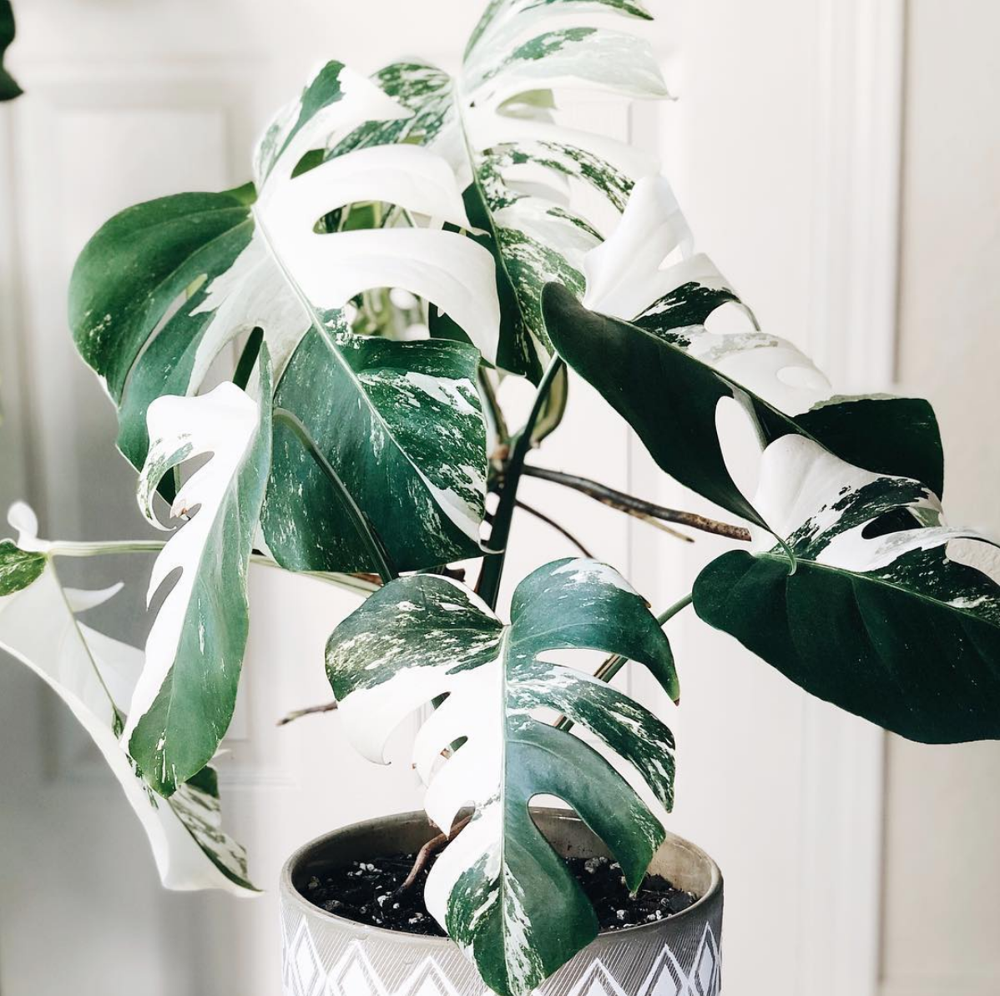

<div *ngIf="(loading$ | async) && !(loaded$ | async)">
    <page-loading></page-loading>
</div>
<div *ngIf="(loaded$ | async)" class="container" style="margin-top: 1rem;">
    <div class="row">
        <div class="col-sm-12 col-md-7 col-lg-7">
            <!-- <div class="image-container container d-flex justify-content-center">
                
            </div> -->
            <div class="default-card card">
                <div class="card-tile">
                    

                </div>
                <div class="card-body">
                    <h5 class="card-title">{{plant.name}}</h5>
                    <p class="card-text">Added: {{plant.dateAdded | date}}</p>
                    <ul class="list-group list-group-flush">
                        <li class="list-group-item">Genus: {{plant.genusName}}</li>
                        <li class="list-group-item d-flex justify-content-between">
                            <span>
                                Last Watered: 
                                <span [ngStyle]="{'color': (plant.waterState==3) ? 'red' : 'black'}">{{plant.dateWatered | date}}</span> 
                                <div *ngIf="plant.waterState==3">
                                    <span>(5 days overdue)</span>
                                </div>
                            </span>
                            <span>
                                <a class="water-icon btn btn-primary btn-sm" (click)="waterFertilizePlantPatch('water')">
                                    <fa-icon class="specialIcon waterIcon" [icon]="waterIcon"></fa-icon>
                                </a>
                            </span>
                        </li>
                        <li class="list-group-item d-flex justify-content-between">
                            <span>
                                Last Fertilized: 
                                <span [ngStyle]="{'color': (plant.fertilizeState == 3) ? 'red' : 'black'}">
                                    {{plant.dateFertilized | date}}
                                </span> 
                                <div *ngIf="plant.fertilizeState==3">
                                    <span>(3 days overdue)</span>
                                </div>
                            </span>
                            <span>
                                <a class="fertilize-icon btn btn-success btn-sm" (click)="waterFertilizePlantPatch('fertilize')">
                                    <fa-icon class="specialIcon fertilizeIcon" [icon]="fertilizeIcon"></fa-icon>
                                </a>
                            </span>
                        </li>
                    </ul>
                </div>
                <div class="card-footer d-flex justify-content-between">
                    <a class="btn btn-sm btn-secondary" (click)="navigateBackHome()"><fa-icon class="specialIcon returnIcon" [icon]="returnIcon"></fa-icon></a>
                    <a class="similar-btn btn btn-sm" (click)="navigateToAddPlantPage()">Add Similar</a>
                </div>
            </div>
        </div>
        <!-- <div class="col-sm-12  col-md-5  col-lg-5">
            <div class="default-card card">
                <h5 class="card-title">Stats</h5>
                <div class="card-body">
                    <p>Will contain plant stats</p>
                </div>
            </div>
        </div> -->
    </div>
    
</div>